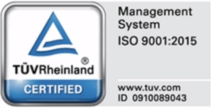

経済産業省「はばたく中小企業･小規模事業者300社」需要獲得部門で受賞
2020.11.13

会社概要
MESSAGE
PROFILE
History
HISTORY
| 1911 |
朝倉市において大隈圓次郎が個人企業形態で木製建具の製造開始
|
| 1955 | 『有限会社大隈建具製作所』設立 |
| 1968 | 日本住宅協会公共住宅用規格部品『KJドア』指定工場となる |
| 1970 |
朝倉市柿原に甘木工場を新設 |
| 1973 | グループ会社として『九州住宅工業株式会社』を新設 |
| 1976 |
福岡県朝倉市菱野に朝倉工場を新設
|
| 1978 | 国土交通省（旧建設省）より『BL優良住宅部品の認定工場』として認証 |
| 1983 | 『株式会社オークマ』に社名変更 |
| 1992 | 天皇・皇后両陛下へ御座献上 |
| 1994 |
福岡県朝倉郡東峰村に宝珠山工場を開設 |
| 1995 | 『優良申告法人』として表敬状を授与される（継続中） |
| 1996 | 快適職場環境の形式として、『福岡労働基準局長賞』を受ける |
| 1999 |
国際規格『ISO9001』の認定取得
 |
| 2006 | 環境省『EA21（エコアクション21）』の認証を取得 |
| 2008 | “komorebi”が『福岡産業デザイン賞2008 優秀賞』を受賞 |
| 2009 | 環境省『EA21環境レポート大賞九州』を受賞 |
| 2010 | 福岡県より“AKARIDO”にて『経営革新』の承認を受ける |
| 2010 | 創業100周年を迎える |
| 2012 |
中国湖北省に『欧克玛家居（湖北）有限公司』を設立
“DAI SERIES”にて『福岡産業デザイン賞2012 優秀賞』を受賞 |
| 2013 | 福岡県木材組合連合会より『合法木材供給事業者』に認定 |
| 2014 | 経済産業省より『異分野連携新事業分野開拓計画』の認証取得 |
| 2015 | 海尔家居集成股份有限公司（中国）と合弁契約を締結し『青岛大隈智能住建设施有限公司』設立 |
| 2016 |
中国山東省青島市に膠州工場 新設
“PANE LOUVER”が『ウッドデザイン賞2016 ライフスタイルデザイン部門』を受賞 |
| 2017 |
『福岡県ものづくりモノ語り100』に掲載される
経済産業省より『経営力向上計画』の認定を受ける 経済産業省より『地域未来牽引企業』に選定される |
| 2018 |
経済産業省より『健康経営優良法人2018』に認証される
環境省が推進している『Fun to share』に参加 |
| 2019 | 経済産業省『第5回環黄海経済・技術交流大賞』を受賞 |
| 2020 | 経済産業省『はばたく中小企業・小規模事業者300社』に選定される |
Awards
2020.11.13
2019.11.25
2018.11.05
2017.11.10
2017.01.24
2019.11.25
clients


オークマは建材製造の会社として、幅広い活動を通して社会に貢献していきます。 すべては、暮らしに「モノづくり」で応えるために。
Awards

Awards
Awards
Awards

Awards

Awards